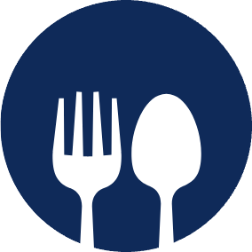

Welcome to Culinary Connect, where our mission is to bring communities together by combating food waste and hunger through innovative solutions. At the heart of our initiative is a passion for nurturing connections between those with surplus food and those in need, fostering a culture of sharing and compassion. Culinary Connect serves as a bridge, ensuring that excess meals find their way to tables that welcome them, thus promoting sustainability and community welfare. Our platform is designed to empower individuals, businesses, and organizations to participate in a movement that values every bite, respects our resources, and cherishes the joy of shared meals. Join us in our journey to make food accessibility a reality for everyone, transforming surplus into support and fostering a community united by the love of food.